Holden Commodore
ZB (2018–2020) · 2018–2020
Abstract
This generation of the Holden Commodore is a full-size car, built February 2018 – December 2020 in Germany: Rüsselsheim (Opel Automobile GmbH). Body styles: 5-door liftback/fastback, 5-door station wagon. Layout: FF/F4/FR (motorsport). This generation has its own article: Holden Commodore (ZB).
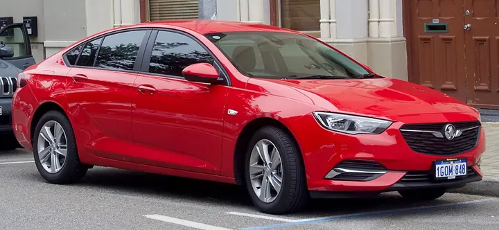
_LT_sedan_(2018-08-06)_01.jpg){kind=link}
1Specifications
| Production | February 2018 – December 2020 |
|---|---|
| Assembly | Germany: Rüsselsheim (Opel Automobile GmbH) |
| Class | Full-size car |
| Body style | 5-door liftback/fastback5-door station wagon |
| Layout | FF/F4/FR (motorsport) |
| Platform | E2XX platform |
| Engine | 2.0 L LTG turbo petrol I43.6 L LGX petrol V62.0 L Fiat Multijet II turbo-diesel I4 |
| Transmission | 8-speed Aisin AF50-8 automatic (diesel)9-speed GM 9T50 automatic (2.0T)9-speed GM 9T60 automatic (V6) |
| Wheelbase | 2829 mm |
| Length | 4897 mm4986 mm (wagon) |
| Width | 1864 mm |
| Height | 1455 mm |
| Weight | 1440–1649 kg |
| Also called | Opel InsigniaBuick RegalVauxhall Insignia |
| Predecessor | Holden Commodore (VF)Holden MalibuHolden InsigniaHolden Adventra (AWD Tourer)Holden Caprice (Calais-V) |
2Versions
- Commodore LT
- Commodore RS
- Commodore RS–V
- Commodore VXR
- Calais
- Calais-V
3Previous generations
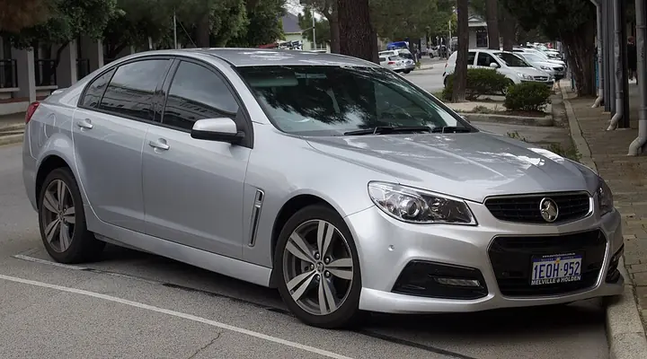
_SV6_sedan_(2018-08-27)_01.jpg){kind=link}

_V_sedan_(2010-06-17)_01.jpg){kind=link}
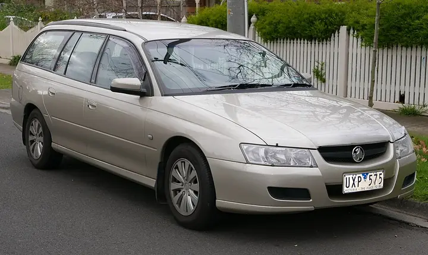
_Acclaim_station_wagon_(2015-07-03)_01.jpg){kind=link}
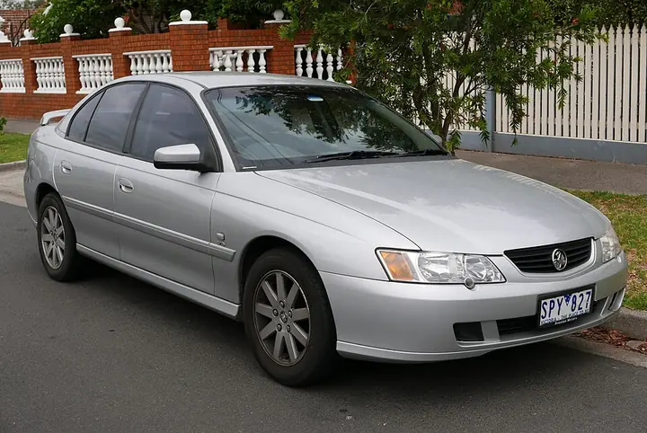
_25th_Anniversary_sedan_(2016-01-04)_01.jpg){kind=link}
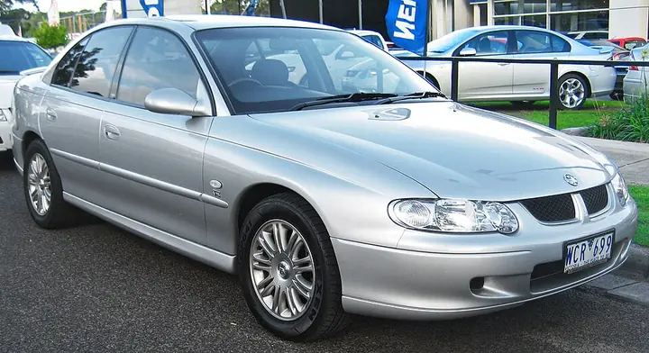
_Lumina_sedan_(2010-05-05).jpg){kind=link}
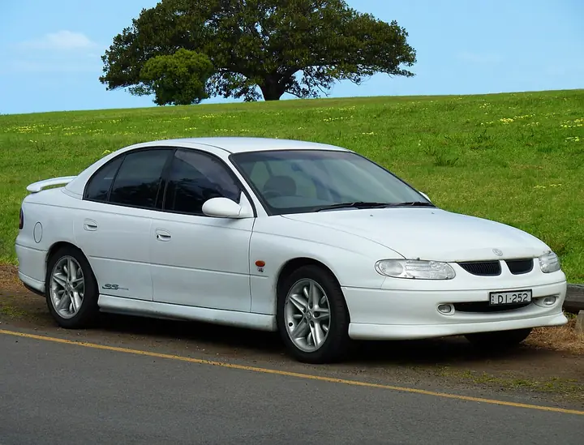
_SS_sedan_(2010-09-23)_01.jpg){kind=link}
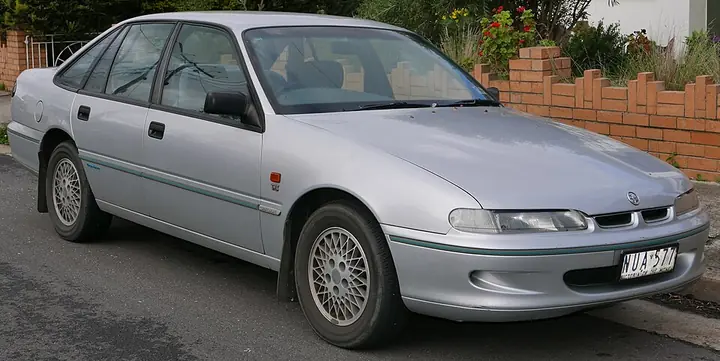
_Equipe_sedan_(2015-07-15)_01.jpg){kind=link}
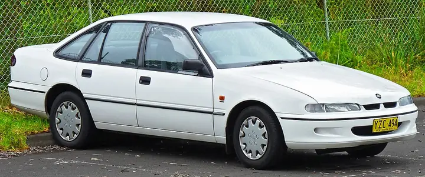
_Executive_sedan_(2011-11-30)_02.jpg){kind=link}
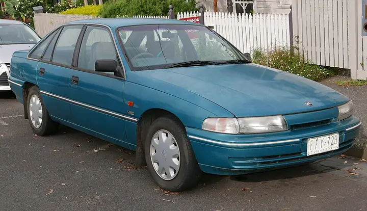
_Executive_sedan_(2015-11-11)_01.jpg){kind=link}
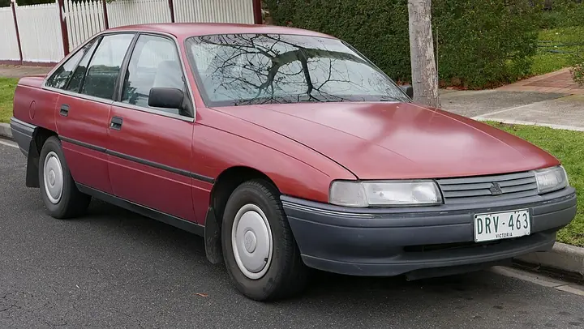
_Executive_sedan_(2015-07-03)_01.jpg){kind=link}
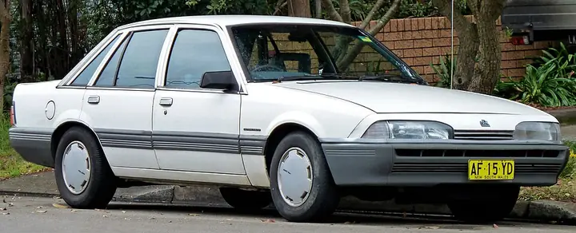

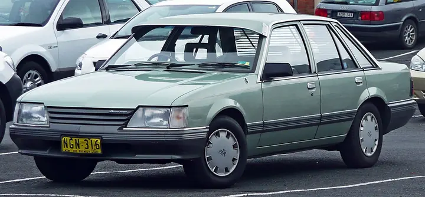

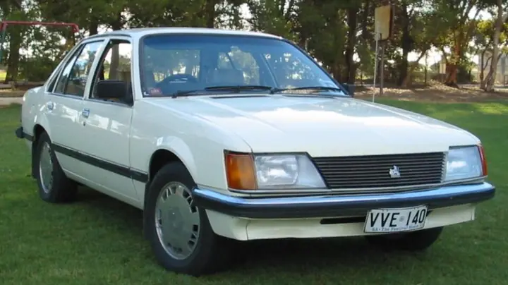

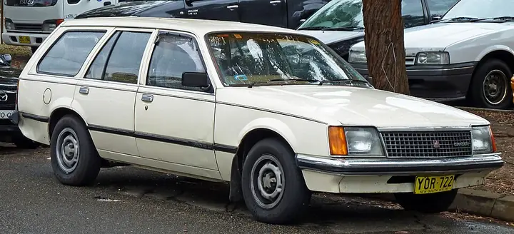

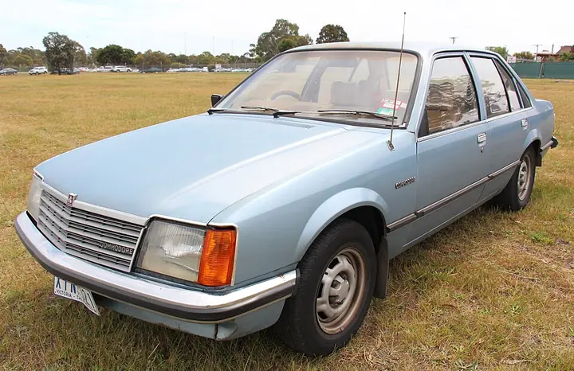
.jpg){kind=link}
4Generation by generation
Length +4% from the first to the last
VB 19784,705 mm
VC 19804,706 mm
VH 19814,706 mm
VK 19844,714 mm
VL 19864,766 mm
VN 19884,850 mm
VP 19914,891 mm
VS 19954,861 mm
VT 19974,882 mm
VX 20004,891 mm
VY 20024,891 mm
VZ 20044,876 mm
VE 20064,894 mm
VF 20134,947 mm
ZB 20184,897 mm
Weight +24% from the first to the last
VC 19801,158 kg
VH 19811,152 kg
VK 19841,220 kg
VL 19861,250 kg
VN 19881,311 kg
VP 19911,332 kg
VS 19951,385 kg
VT 19971,551 kg
VX 20001,519 kg
VY 20021,522 kg
VZ 20041,569 kg
VE 20061,690 kg
VF 20131,622 kg
ZB 20181,440 kg